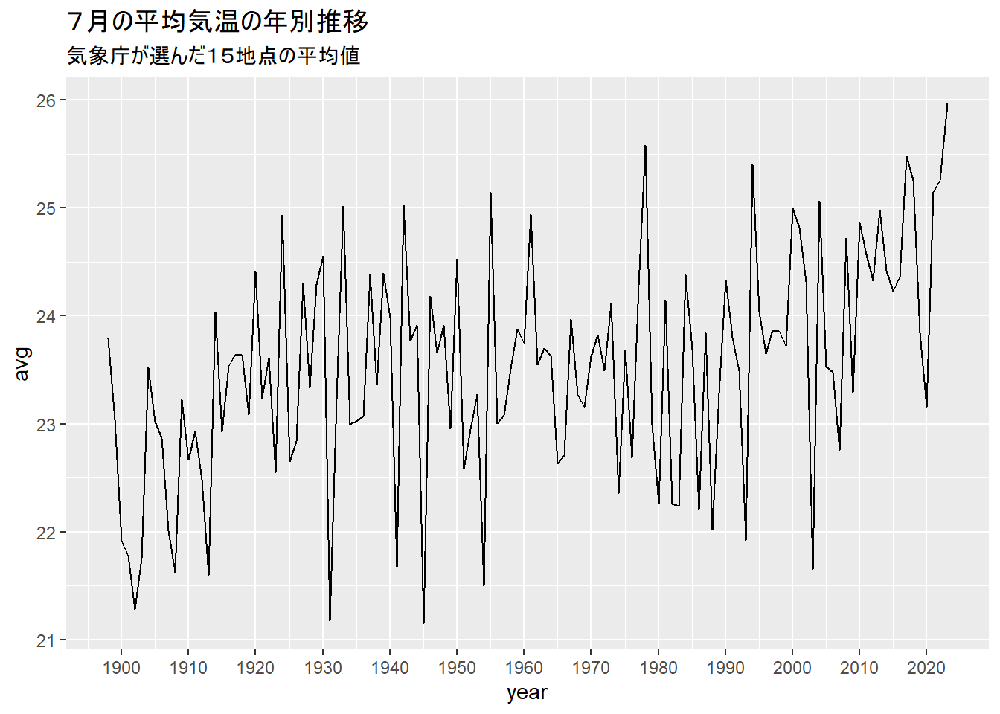

朝日新聞は8月2日の朝刊1面と2面で、「最も暑かった7月 120年間分析、45年ぶり更新」「居座る猛暑」との記事を掲載した。デジタル版では同内容の記事「7月の気温、125年で最も高く 温暖化の影響で45年ぶり記録更新」「お風呂並みの海面水温、シエスタ導入提案…『地球沸騰』の現実と要因」を8月1日に掲載した。
分析対象としたのは、気象庁が「日本の平均気温」を算出するための基準としている国内15地点のほか、東京、名古屋、大阪、福岡の計19地点。分析にあたっては、気象庁の専門家から監修を得た。
記事のもとになったデータと、可視化のためのコードを以下で説明する。
レギュラー選手3人を呼び出します。
library(tidyverse)
library(lubridate)
library(gt)気象庁のサイトからとってきたデータを読み込む。
# 19世紀末から2022年までのデータ
til22 <- bind_rows(read_csv("data/till1920.csv"),
read_csv("data/till1960.csv"),
read_csv("data/till2000.csv"),
read_csv("data/till2022.csv")) %>%
mutate(date=as.Date(date))
# 2023年7月31日までのデータ
only23 <- read_csv("data/all2023.csv") %>%
mutate(date=as.Date(date),
avg=as.double(avg),
max=as.double(max),
min=as.double(min))
# データを合体させる
temps <- bind_rows(til22, only23) %>%
mutate(cities=ifelse(place %in% c("tokyo","nagoya","osaka","fukuoka"),"1","0")) %>% # ４都市のデータにタグ
select(date,avg,max,min,place,cities) %>%
distinct(date,avg,max,min,place,cities)こんな感じのデータ。
temps## # A tibble: 904,712 × 6
## date avg max min place cities
## <date> <dbl> <dbl> <dbl> <chr> <chr>
## 1 1875-01-01 NA NA NA osaka 1
## 2 1875-01-02 NA NA NA osaka 1
## 3 1875-01-03 NA NA NA osaka 1
## 4 1875-01-04 NA NA NA osaka 1
## 5 1875-01-05 NA NA NA osaka 1
## 6 1875-01-06 NA NA NA osaka 1
## 7 1875-01-07 NA NA NA osaka 1
## 8 1875-01-08 NA NA NA osaka 1
## 9 1875-01-09 NA NA NA osaka 1
## 10 1875-01-10 NA NA NA osaka 1
## # … with 904,702 more rows気象庁が選んだ15地点で、2023年7月の平均気温が過去最高になったことを示すランキング。とりあえずトップ10を。
temps %>%
filter(cities==0,
!is.na(avg)) %>%
mutate(year=year(date),
month=month(date)) %>%
filter(month == 7) %>%
group_by(year) %>%
summarize(avg=mean(avg)) %>%
arrange(desc(avg)) %>%
head(10) %>%
gt()| year | avg |
|---|---|
| 2023 | 25.96473 |
| 1978 | 25.58043 |
| 2017 | 25.47763 |
| 1994 | 25.40344 |
| 2018 | 25.25570 |
| 2022 | 25.25570 |
| 2021 | 25.14731 |
| 1955 | 25.14409 |
| 2004 | 25.06301 |
| 1942 | 25.03247 |
データから、７月の年別、日別の平均気温の推移を示すグラフを描く。紙面では1面に掲載されたもの。
# 年別グラフ
temps %>%
filter(!is.na(avg)) %>%
mutate(year=year(date),
month=month(date)) %>%
filter(month == 7,year>=1898,cities==0) %>%
group_by(year) %>%
summarize(avg=mean(avg)) %>%
ggplot() +
geom_line(aes(year, avg)) +
scale_x_continuous(breaks = seq(1900, 2020, by = 10)) +
labs(title="７月の平均気温の年別推移",
subtitle="気象庁が選んだ１５地点の平均値")
# 日別グラフ
temps %>%
filter(cities==0) %>%
mutate(year = year(date),
month = month(date),
day = day(date)) %>%
filter(month == 7) %>%
group_by(year,day) %>%
summarize(avg=mean(avg)) %>%
mutate(年 = ifelse(year == 2023, "2023",
ifelse(year == 1978, "1978", "その他の年"))) %>%
ggplot(aes(day,avg,color=年,group=year)) +
geom_line() +
scale_color_manual(values=c("black", "red", "lightgray")) +
labs(title="７月の日別平均気温の推移",
subtitle="気象庁が選んだ１５地点の平均値")## `summarise()` has grouped output by
## 'year'. You can override using the
## `.groups` argument.## Warning: Removed 19 rows containing missing
## values (`geom_line()`).1898年以降の各年について、7月のすべての日の平均気温の推移を示すヒートマップを描く。紙面では2面に掲載。1945年の一部データが欠損しているのは、この年の7月19日に千葉県銚子市が空襲を受け、銚子地方気象台の1～19日の記録が失われたため。歴史を感じますね…
temps %>%
filter(cities==0) %>%
group_by(date) %>%
summarize(avg_avg=mean(avg)) %>%
mutate(year=year(date),
month=month(date),
day=day(date)) %>%
filter(month==7) %>%
ggplot(aes(day,year,fill=avg_avg)) +
geom_tile() +
scale_fill_gradient2(high="red",low="blue",mid = "white",midpoint = 23) +
scale_y_continuous(breaks = seq(1900,2020, by = 20)) +
labs(title="7月の日ごと平均気温の推移",
subtitle="気象庁が選んだ１５地点")猛暑日や真夏日がだんだん増えてきていることを示す積み上げ棒グラフ。2面掲載。前述の1945年を始め、ところどころデータが欠損している。
temps %>%
filter(!is.na(max)) %>%
mutate(year=year(date),
month=month(date)) %>%
filter(month==7,
cities==0) %>%
mutate(mousho=ifelse(max>=35,1,0),
manatsu=ifelse((max>=30 & max<35),1,0),
natsu=ifelse((max>=25 & max<30),1,0),
sonota=ifelse(mousho+manatsu+natsu==0,1,0)) %>%
group_by(year) %>%
summarize("4_猛暑日"=sum(mousho),
"3_真夏日"=sum(manatsu),
"2_夏日"=sum(natsu),
"1_その他"=sum(sonota)) %>%
pivot_longer(cols=c(-year),names_to = "type",values_to = "days") %>%
ggplot(aes(year,days,fill=type)) +
geom_bar(stat="identity") +
labs(title="7月の猛暑日や真夏日などの日数",
subtitle="気象庁が選んだ１５地点")今回の記事では、6月にやった熱中症分析のような回帰分析はせず、やったことはほぼ、データをグラフにするという単純な作業だけだった。
ただ、何をもって「日本の平均気温」とするかは、実はけっこう複雑だ。気象庁は前述した国内各地の15観測所の気温について、1991~2020年の平均値を「平年値」とし、そこからの差分を「日本の平均気温の変化」とみなす、という手順を踏んでいる。一方で朝日新聞が今回やったのは、15観測所の気温を平均して、それをざっくり、日本の平均気温とみなすというもの。
こうした単純化をしたのは、気象庁の定義する「平年値」にはところどころ欠損があったり、また観測所が引っ越すことによって補正が必要になったりするので、あまり深入りしないほうが良いと判断したため。気象庁の平井雅之・気候情報調整官からさまざまなアドバイスを頂きながら、こうした分析を進めた。
以上。